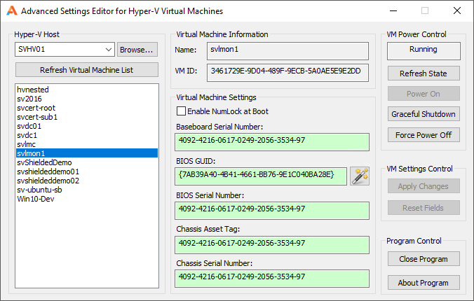
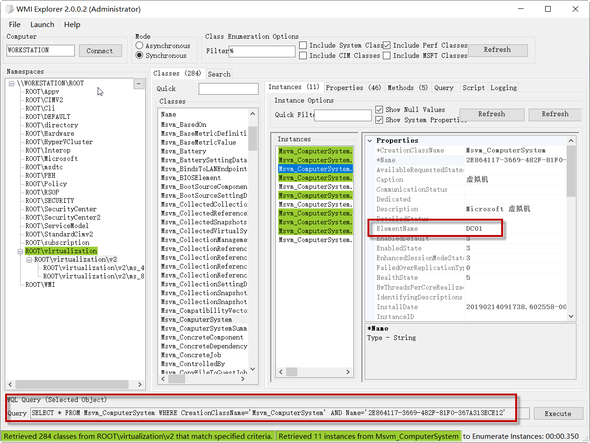
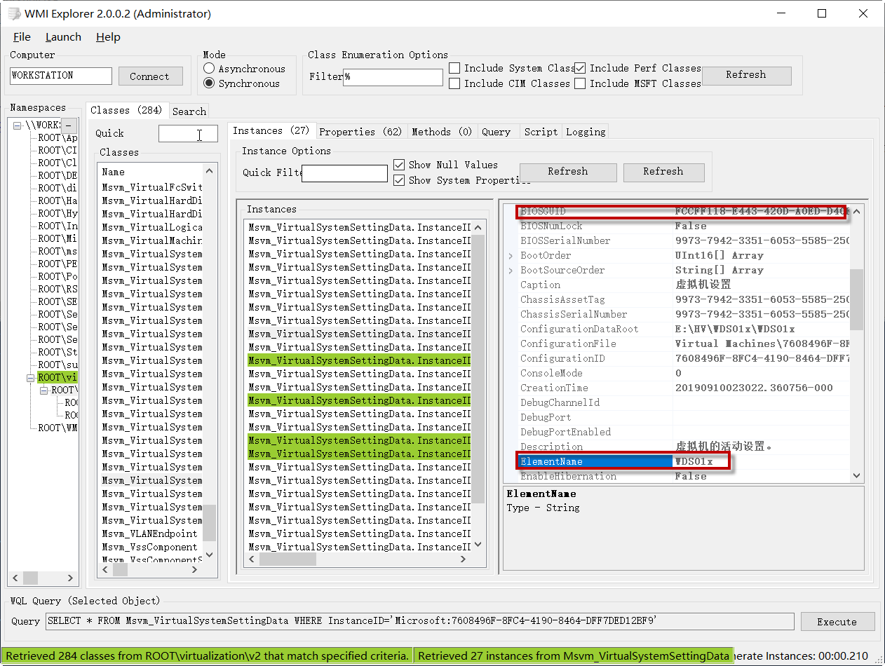
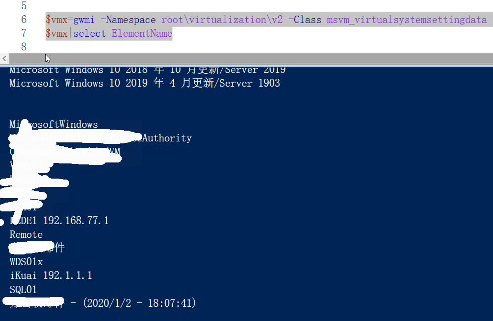
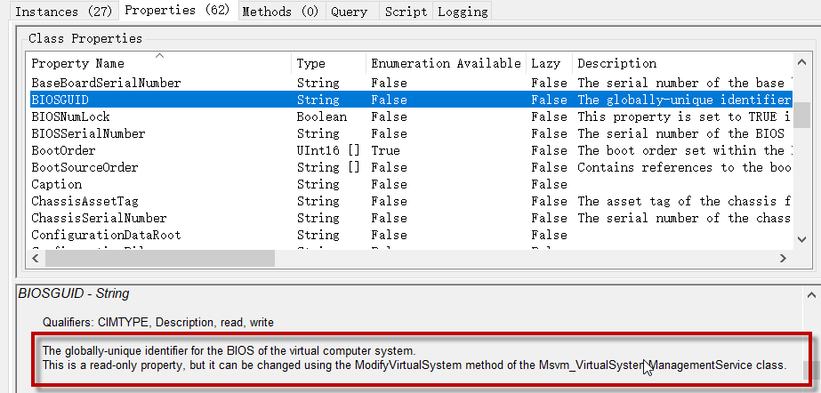

需求
修改Hyper-V下，虚拟机的UUID，模拟更换主板导致的主机UUID的变更。
实现
有个叫做Eric Siron的大哥，很早已经做过这个事情的实现，所以完成这件事情是有现成脚本的。
在2016年4月的时候，他发了一篇 PowerShell Script: Change the BIOS GUID of a Hyper-V Virtual Machine，这篇文章有现成脚本。
在2017年4月的时候，他因为这个事情，写了一个集成工具 Free Tool: Advanced Settings Editor for Hyper-V Virtual Machines 大概是这个样子的。

这件事情给我的感触是，即使过去一年之久，你想要有改变，就一定有改变发生。
另外他的这篇科普文Hyper-V Virtual CPUs Explained，Hyper-V虚拟机CPU的解释非常不错，浅入浅出，适合销售吹水。
科普之二：为什么需要使用VMM、以及什么时候不使用
WMI
回归原题，这次修改虚拟机的UUID，实际是通过WMI来实现的。什么是WMI？
Windows管理规范（Windows Management Instrumentation，缩写WMI）由一系列对Windows Driver Model的扩展组成，它通过仪器组件提供信息和通知，并提供了一个操作系统的接口。WMI是微软对分布式管理工作组（DMTF）的基于Web的企业管理类（WBEM）和通用信息模型（CIM）标准的实现。
WMI预装在Windows 2000及更新版的微软操作系统中，适用于Windows NT、Windows 95和Windows 98等操作系统，[1][2]并允许使用脚本语言（例如VBScript或Windows PowerShell）来本地或远程管理Microsoft Windows个人电脑和服务器。
微软亦为WMI提供了一个称为Windows Management Instrumentation Command-line（WMIC）的命令行界面
WMI在Windows 2000时代就有了，可以说是一个非常老的技术。但是为什么到2019，还会被反复用到，我觉得有这么几个原因
- 一些非常小众的功能，没有图形界面操作，有些人写过WMI实现，但是这些实现没有被更新到最新的操作系统中。
- WMI更底层，即使有原生命令，但是用WMI效率可能会更好。
当然我觉得大多数是第一个理由，一些稀奇古怪的需求（比如硬要修改UUID），消费者级别是很难接触到的，产品开发也不会去做，只留下了一个古老的WMI接口。
WMI编辑器
对于查看WMI属性，推荐一个WMI编辑器，没有之一
注意，尽量用管理员方式打开，否则打开只能看到物理机信息，虚拟机看不到。而别的场景下，可能你看到的东西也是不全的。
WMI查询与PowerShell代码
有前辈已经写了一条范例,这条例子可以查看虚拟机的UUID
1
Get-VM "VMname" | % { (gwmi -Namespace root\virtualization\v2 -Class msvm_computersystem -Filter ('ElementName="{0}"' -f $_.Name)).GetRelated('msvm_virtualsystemsettingdata') | select BIOSGUID }
windows和linux的UUID稍有不同，主要是计算方式不一样
1
2
Linux: A1B2C3D4-E5F6-G7H8-XXXX-XXXXXXXXXXXX
Windows: D4C3B2A1-F6E5-H8G7-XXXX-XXXXXXXXXXXX
其实UUID这个问题不仅困扰Hyper-V，对VMware一样心狠手辣，当然友商也有现成解决方法
这篇文章有非常详细的实现过程，可以看下讨论的过程。
我们接下来先用WMI浏览器，根据上面的一些帖子，熟悉一下工具的使用。这里可以看到，我们能够很方便的查看WMI相关类的具体属性，以及它支持多少属性，有多少实例，你不需要用gwmi一遍一遍的查询，一次一次就可以搞定。最下方还可以帮你生成WQL的查询指令 
在这个位置，我们可以看到虚拟机名称和BIOSguid（也就是UUID），知道路径也就可以构造查询语句了。如果想查别的属性，也可以很方便的查看

通过构造查询，才可以发现，这个鬼东西有多牛逼，它竟然可以把虚拟机快照的的BIOSguid抓出来（下图带日期的那条记录）

比如说，我想修改BIOSguid，但是我不知道方法，用这个工具也能找到很合适的提示
这里说明了，这个属性虽然是只读的，但是可以修改，根据提示搜索，找到了这里的详细说明，通过链接，能找到最原汁原味的C#方法：戳这里

有了这些，就可以强硬构造PowerShell了。不过有前人写了那么的代码，找出核心部分重新构造即可。
下面的代码用了一些现代的方法，比如点分表示法，管道查询。
1
2
3
4
5
6
7
8
9
10
11
12
13
14
15
16
17
18
19
#这里假设虚拟机的VMname是2020
$VMname="2020"
$vmx = Get-WmiObject -Namespace root\virtualization\v2 -Class msvm_virtualsystemsettingdata
#每次操作选择一台虚拟机
$CurrentSettingsData = $vmx | Where-Object { $_.ElementName -eq $VMname }
#检查一下老的GUID
$CurrentSettingsData.BIOSGUID
#生成新GUID
$GUID = [System.Guid]::NewGuid()
#重新写入GUID，注意要带{}，这是非常重要的细节
$CurrentSettingsData.BIOSGUID = "{" + $GUID.Guid.ToUpper() + "}"
#生成一个ModifySystemSettings的空对象
$VMMS = Get-WmiObject -Namespace root\virtualization\v2 -Class msvm_virtualsystemmanagementservice
$ModifySystemSettingsParams = $VMMS.GetMethodParameters('ModifySystemSettings')
#配置这个属性，需要特殊的转换方式
$ModifySystemSettingsParams.SystemSettings = $CurrentSettingsData.GetText([System.Management.TextFormat]::CimDtd20)
#写入
$VMMS.InvokeMethod('ModifySystemSettings', $ModifySystemSettingsParams, $null)
总结
温故而知新，永远不过时